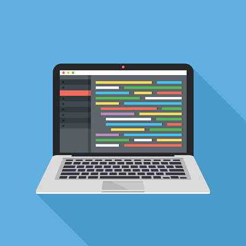

Why I Code
I have been a problem solver ever since I can remember. I took my first programming class in community college and was immediately drawn into the world of tech. I like to create things with code that make life easier, however this isn't limited to software. For example, I live with a young child in my household and she clicks on ads whenever shes using a tablet/smart device and it wouldn't' need help getting back to her original app. To solve this I made a custom DNS server which all the ads on my network are sent, it is basically an AdBlocker for my entire network. This is just one of the ways that I use code/tech as a tool to solve problems.
A Little Bit About Myself
I love the feeling of excitement that I get when I work with software/technologies that I am unfamiliar with. Things like this use to scare me because I would feel like the absence of knowledge meant that I was incapable, but now I look those situations as a challenge that I will overcome. I strive to learn new things everyday, I want to become the best software developer that I know. The ability to create things with just my computer will never cease to amaze me, whether it's a small program to calculate a sum or a personal webpage. I am always eager to learn more, this drives me to be the best version of myself and I will continue to do so.